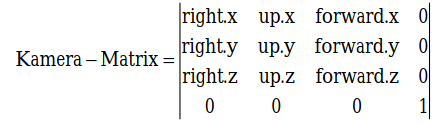

Demo-Programmierung unter Windows 95/NT
Tuning am Grafikmotor
Die 3D-Engine der letzten Ausgabe erweitern Sie diesmal um eine frei bewegliche Kamera. Verschiedene Verfahren verbessern zudem die Grafikausgabe.
Carsten Dachsbacher/Nils Pipenbrinck
Die in der letzten Ausgabe von PC Magazin (ab S. 234) entwickelte 3D-Engine bewegt dreidimensionale Objekte in jede beliebige Richtung und arbeitet bereits mit einer imaginären Kamera. Diese steht allerdings starr am Nullpunkt des Koordinatensystems und blickt immer in Richtung der z-Achse. Das werden wir nun ändern.
Halten Sie die Kamera dabei aber stets auf der z-Achse, die auch identisch mit der Blickrichtung sein sollte. Denn nur so projizieren Sie die Vertex-Koordinaten leicht vom dreidimensionalen Raum in die zweidimensionale Bildschirmebene.
Zuerst entwickeln Sie die flexible Position der Kamera. Dazu müssen Sie etwas umdenken: Stellen Sie sich vor, Sie sind die Kamera. Wenn Sie in den Raum sehen und einen Schritt nach links machen, bewegen sich aus Ihrer Sicht alle Dinge nach rechts. Anders gesagt, verschiebt sich die ganze Welt vor Ihnen nach rechts. Die Position der Kamera sowie die Stellungen der Objekte untereinander ändern sich dabei prinzipiell nicht.
Diese Beobachtung integrieren Sie recht einfach in das bestehende System. Da Sie die Verschiebung (Translation) der Objekte während der Matrix-Berechnung als letztes berücksichtigen, brauchen Sie nur die Position der Kamera von der jeweiligen Objektposition zu subtrahieren
Jetzt können Sie Ihre Kamera bewegen, sehen aber nach wie vor nur entlang der z-Achse. Zusätzlich könnten Sie noch die komplette 3D-Szene um den Standpunkt der Kamera drehen. Dies ginge sehr einfach, da Sie ja nur die Koordinaten der Objekte modifiziert haben und die Kamera nach wie vor im Ursprung steht. Sie bräuchten deshalb nur die Objekt-Matrix mit einer Rotations-Matrix zu multiplizieren.
Diese Methode ist aber nicht sehr anschaulich, weil hier der Rotationswinkel die Blickrichtung bestimmt. Vorzugsweise sollte die Stellung der Kamera durch ihre eigene Position und durch die Ausrichtung auf einen bestimmten Punkt definiert sein. Die Berechnung einer Matrix, die eine 3D-Szene so rotiert, daß die Blickrichtung der Kamera entlang der z-Achse bleibt, erfordert etwas Vektorarithmetik.
Einen dreidimensionalen Raum spannen Sie aus drei senkrecht aufeinander stehenden Vektoren auf, da diese voneinander unabhängig sind (kein Vektor ist durch eine Kombination der beiden anderen darstellbar). Somit können Sie jeden Punkt p in diesem Vektorraum durch eine Kombination
p = a1 ⋅ x + a2 ⋅ y + a3 ⋅ z
aus x, y und z beschreiben.
Definieren Sie zuerst ein Koordinatensystem für Ihre Kamera, in dem die Kamera immer entlang der z-Achse zeigt. In dieses Koordinatensystem drehen – also projizieren – Sie die Objekte hinein.
tvector forward;
tvector up;
tvector right;
Der Vektor forward entspricht der Blickrichtung der Kamera. Sie berechnen ihn aus der Position und dem Zielpunkt (Target) der Kamera. Danach normalisieren Sie ihn für spätere Berechnungen auf die Länge 1:
forward.x = camera.target.x - camera.position.x;
forward.y = camera.target.y - camera.position.y;
forward.z = camera.target.z - camera.position.z;
normvector(forward);
Nun sorgen Sie dafür, daß die Drehung um die Blickrichtung der Kamera korrekt ist. Dies berechnen Sie mit dem Vektor up. Er zeigt in die Richtung, die Sie im Kamerabild als „oben“ bezeichnen würden. Da Sie nicht wissen, ob er rechtwinklig auf dem Vektor forward steht oder nicht, korrigieren Sie ihn später noch. Vorläufig soll folgender Vektor fest vorgegeben sein:
up.x = 0;
up.y = 1;
up.z = 0;
Durch das Kreuzprodukt von forward und right erhalten Sie einen Vektor, der senkrecht auf diesen beiden steht. Dieser Vektor kann daher im Kamera-Koordinatensystem nur derjenige sein, der im Bild nach „rechts“ zeigt. Auch diesen Vektor namens right normalisieren Sie:
crossproduct(up,forward,right);
normvector(right);
Nachdem Sie nun forward und right kennen, können Sie wiederum einen neuen Vektor up bestimmen. Da dieser senkrecht auf forward und right steht, berechnen Sie ihn erneut mit dem Kreuzprodukt und anschließendem Normalisieren:
crossproduct(forward,right,up);
normvector(up);
Eine kleine Einschränkung besteht bei dieser Art der Kameraberechnung: Sie sind hier davon ausgegangen, daß das Kreuzprodukt von forward und up den Vektor right ergibt, der rechtwinklig auf diesen beiden steht. Die Blickrichtung der Kamera kann aber auch genau nach oben zeigen, also in die gleiche Richtung wie der Vektor up. In diesem Fall liefert Ihnen das Kreuzprodukt für right den Nullvektor <0,0,0>, und das Normalisieren scheitert somit an einer Division durch 0.
Vermeiden Sie bei diesem Kameramodell also Kamerafahrten, in denen die Kamera genau nach oben zeigt. Programmieren Sie für diesen Fall eine Sonderbehandlung, eventuell mit leichter Korrektur der Blickrichtung.
Zum Abschluß sollten Sie noch eine freie Drehung der Kamera um die Achse der Blickrichtung, den sogenannten Rollwinkel, einbauen. Drehen Sie dazu den bisher festen Vektor up mit den Werten <0,1,0> um die z-Achse. Dadurch erhalten Sie für up
up.x = -sin(kamera.roll);
up.y = cos(kamera.roll);
up.z = 0;
Stellen Sie die Kamera zum Beispiel auf den Kopf, dann steht die 3D-Szene ebenfalls auf dem Kopf.
Benutzen Sie diesen Blickwinkel aber mit Feingefühl: Wir sind es nicht gewohnt, daß sich unser Sichtfeld dreht und auf dem Kopf steht. In Filmen und Animationen kommt dieser Effekt zu Recht nur sehr sparsam zum Einsatz.
Aus den drei soeben gewonnenen Vektoren bauen Sie nun eine Matrix auf, die das Koordinatensystem wie gewünscht abbildet: Dann liegt forward entlang der z-Achse, right entlang der x-Achse und up entlang der y-Achse.

Schließlich können Sie auch noch den Öffnungswinkel des (virtuellen) Kameraobjektivs beeinflussen. Die entsprechende Funktion finden Sie im Quelltext von 3dcamera.cpp. Hier ist die Kamera als Klasse tcamera implementiert. Die darin enthaltene Funktion
tcamera::set_perspective(const float aPerspective)
setzt die Perspektive bzw. Brennweite der Kamera. Dazu berechnet sie die Projektionsfaktoren und das Clipping-Fustrum für das 3D-Clipping neu. Fustrum ist der englische Ausdruck für eine abgestumpfte Pyramide und bezeichnet hier das von der Kamera aus sichtbare Volumen.
Um die Kamera auf Ihre 3D-Objekte anzuwenden, multiplizieren Sie lediglich die Objekt- mit der Kamera-Matrix. So erhalten Sie die endgültige Abbildung für Ihre Objekte. In 3dengine.cpp erledigt dies die Funktion build_ltm:
void tobject::build_ltm(tcamera * camera)
{
float temp[16];
matrix_mul(temp, mrot, mscale);
temp[3] += mtrans[3] - camera->position.x;
temp[7] += mtrans[7] - camera->position.y;
temp[11]+= mtrans[11] - camera->position.z;
matrix_mul(ltm, temp, camera->matrix);
angle_preserving_matrix_inverse(ltm, iltm);
}
Ihre erste 3D-Animation
Da Sie nun sowohl Kamera- als auch Objektbewegungen beherrschen, können Sie sich an Ihre erste 3D-Animation wagen. Eine Szene nach Ihren Vorstellungen entwerfen Sie am einfachsten mit einem 3D-Editor. Neben kommerziellen Programmen gibt es hierfür auch empfehlenswerte Shareware (siehe Textbox „Shareware für 3D-Animationen“ unten).
Um eine 3D-Animation zu berechnen, müssen Sie die Objekte nicht für jedes Einzelbild verschieben. Nur für einige sogenannte Keys geben Sie die Positionen der Kamera und des Zielpunkts an. Die entsprechenden Werte der dazwischenliegenden Bilder berechnen die meisten Programme durch ein bestimmtes Interpolationsverfahren (häufig werden sogenannte kubische Splines verwendet).
Nun machen es Ihnen viele Hersteller nicht leicht, an die von Ihrem Programm erzeugten Daten heranzukommen. Oft sind Dateiformate undokumentiert, oder die Beschreibung ist nur in Form eines – meist sehr teuren – Developer Kit erhältlich. Selbst mit vorliegenden Informationen ist eine vollständige Auswertung meist sehr aufwendig.
Viele Editoren bieten jedoch Funktionen, um Objekt- und Kamerabewegungen für jedes Bild einzeln vorzuberechnen und als ASCII-Datei zu speichern. Eines dieser Programme ist das schon etwas betagte Programm 3D-Studio R4 der Firma Autodesk. Es speichert bildweise für alle Objekte und Kameras die dazugehörigen Matrizen und Parameter in einer Datei mit der Endung vue. Auch die Beschreibung einer 3D-Szene können Sie als Textdatei speichern und dann leicht auslesen. Als Eigenheit dieser Animationsbeschreibung liegen die Transformationsmatrizen in den vue-Dateien nicht als 4×4-Matrix vor: Rotation und Skalierung beschreibt eine 3×3-Matrix, die Verschiebung gibt ein Vektor an.
In der erweiterten Version unserer 3D-Engine finden Sie eine Routine, um die Matrix der Objekte direkt zu setzen. Zum Abspielen von vue-Dateien ist dies sehr praktisch.
Die Funktion void tobject::setmatrix (float *matrix, float *trans); zerlegt die 3×3-Matrix in ihren Rotations- und Skalierungsanteil und bereitet die inversen Matrizen für die Lichtberechnung vor.
Flächen realistisch darstellen
Da Sie sich nun frei in 3D-Welten bewegen können, sollten Sie noch den realistischen Eindruck und die Qualität der Darstellung erhöhen. In der letzten Ausgabe des PC Magazin haben Sie bereits eine Routine kennengelernt, um Polygone einfarbig und mit Z-Buffer-Unterstützung zu zeichnen. Nun kommen einfarbige Flächen in der Wirklichkeit aber so gut wie nie vor. Entweder besitzen sie durch die Bestrahlung einer Lichtquelle einen Helligkeitsverlauf, oder sie sind in irgendeiner Art und Weise gekrümmt.
Wie Sie wissen, werden in der 3D-Engine auch gekrümmte Flächen durch Polygone angenähert. Um solche Farbverläufe auf Polygonen zu zeichnen, verwenden Sie das sogenannte Gouraud Shading. Hierzu berechnen Sie die Helligkeitswerte nicht wie bisher für das ganze Polygon, sondern für jeden seiner Eckpunkte.
Die bereits bekannte Formel
Licht = (Normalenvektor O Lichtvektor)
zeigt aber, daß Sie für jeden Eckpunkt eine eigene Normale benötigen. Diese erhalten Sie, indem Sie für jeden Eckpunkt die Normalen aller Flächen addieren, die diesen Eckpunkt enthalten. Den resultierenden Vektor normalisieren Sie anschließend.
Die Helligkeitswerte (Gouraud-Intensitäten) interpolieren Sie nun genauso über das Polygon, wie Sie es mit dem Kehrwert des Z-Buffer-Werts getan haben. Dadurch erhalten Sie einen linearen Farbverlauf auf dem Polygon, der runde Flächen wie etwa eine Kugel auch wirklich rund erscheinen läßt.
Realistische Oberflächen schaffen
Wenn Sie einen dreidimensionalen Körper aus Holz oder Marmor modellieren, besitzt jedes Polygon des Körpers neben verschiedenen Helligkeitswerten auch eine für das Material typische Oberflächenstruktur. Sie könnten eine solche Oberfläche in viele kleine Polygone mit verschiedenen Farben zerlegen, um die Struktur dieser Materialien nachzuahmen. Die Zahl der Polygone würde bei dieser Methode allerdings ins Unermeßliche steigen. Deshalb benutzen Sie hier das sogenannte Texture-Mapping.
Stellen Sie sich vor, Sie schneiden aus einer flexiblen Tapete ein Stück heraus, dehnen es auf die richtige Größe aus und kleben es auf eine Fläche. Genauso verfahren Sie beim Texture-Mapping: Sie nehmen die sogenannte Texture-Map und projizieren sie auf das Polygon. Verwenden Sie als Texture-Map das Bild einer Marmorplatte, erhalten Sie ein marmoriertes 3D-Objekt. Damit die Polygonroutine weiß, welcher Teil des Bilds auf ein Polygon projiziert werden soll, speichern Sie diese Information in den sogenannten Texture-Mapping-Koordinaten u und v. Zwei Koordinaten reichen deshalb aus, weil die Texture-Map zweidimensional ist. Jeder Eckpunkt eines Polygons erhält diese beiden Koordinaten.
Beim Zeichnen der Polygone mit Texturen interpolieren Sie die Koordinaten u und v über das Polygon – analog der Helligkeitsinterpolation beim Gouraud Shading. Immer wenn Sie ein Pixel zeichnen, lesen Sie den entsprechenden Bildpunkt der Texture-Map (Texel) aus und setzen ihn dann unter Berücksichtigung der Gouraud-Intensität.
In dieser Implementation verwenden Sie nur Texturen mit 256 Farben und einer Auflösung von 256 x 256 Pixeln. In den meisten Fällen ist das mehr als genug, außerdem gewinnen Sie dadurch an Geschwindigkeit: Sie können nun eine Shading-Tabelle für die Texturen verwenden und mit dem Farbwert des Bildpunkts und der Helligkeit einfach die resultierende Farbe auslesen. Die Auflösung der Textur wurde so gewählt, daß ein Texel möglichst schnell und einfach im Speicher zu adressieren ist. Die horizontalen und vertikalen Inkremente berechnen Sie also wie folgt:
d = ((double)(x0 - x2) / 65536.0 *
(double)(y1 - y2) /65536.0 -
(double)(x1 - x2) /65536.0 *
(double)(y0 - y2) /65536.0);
if (d==0.0) return;
id = 1.0 / d;
double y12 = (double)(y1 - y2) / 65536.0;
double y02 = (double)(y0 - y2) / 65536.0;
tex_delta_u = ((
(double)(u0 - u2) * y12 -
(double)(u1 - u2) * y02) * id);
tex_delta_v = ((
(double)(v0 - v2) * y12 -
(double)(v1 - v2) * y02) * id);
gouraud_delta = ((
(double)(g0 - g2) * y12 -
(double)(g1 - g2) * y02) * id);
Die innere Schleife zum Zeichnen der Scanlines sieht inzwischen folgendermaßen aus:
for(i = 0; i < breite; i++)
{
// Z-Buffer Vergleich
if ((z >> 16) > zbuffer[i + x1])
{
// Pixel zeichnen
vbuffer[i + x1] =
// Lesen der Shading-Tabelle
// mit Gouraud-Intensität
palette[((g >> 8) & 65280) +
// und Texelfarbwert
* (texture + (u >> 16)
+ ((v >> 16) << 8))];
// Z-Buffer-Wert aktualisie-
// ren
zbuffer[i + x1] = (z >> 16);
}
// horizontale Werte
// aktualisieren
u += tex_delta_u;
v += tex_delta_v;
g += gouraud_delta;
z += zbuffer_d;
}
Subpixel-Genauigkeit
Um die Bewegung der Polygone auf dem Bildschirm weicher und weniger sprunghaft erscheinen zu lassen, verwenden Sie das sogenannte Subpixel-Verfahren. Hierbei verschieben Sie die Startwerte der an den Polygonkanten zu interpolierenden Werte ein wenig. Da Sie diese Startwerte nur an den Eckpunkten der Polygone setzen und ansonsten interpolieren, verlangen auch nur die Eckpunkte eine Subpixel-Korrektur.
Um einen sinnvollen Wert für diese Verschiebung zu berechnen, ermitteln Sie den Betrag, der der y-Koordinate des entsprechenden Eckpunkts auf die nächste ganze Zahl fehlt. Sie berechnen diesen Korrekturwert prestep aus prestep = ceil(Y) - Y; Da Y in Fixpunktarithmetik vorliegt, verwendet die Polygonroutine statt der C-Funktion ceil zum Aufrunden eine eigene Routine. Die korrigierten Werte erhalten Sie, indem Sie das Produkt aus prestep und x_inkrement auf den entsprechenden Wert addieren, bevor Sie das Polygon zeichnen:
x_startwert = x_startwert + prestep * x_inkrement;
Dasselbe gilt auch für alle anderen Interpolationswerte.
Subtexel-Genauigkeit
Nun haben Sie eine Korrektur für die Polygonkanten durchgeführt. Eine weitere Optimierung, die eine Fortführung von Subpixel darstellt und darauf aufbaut, ist das Subtexel-Verfahren. Wie der Name schon vermuten läßt, vermindern Sie damit Sprünge in der Textur. Hier korrigieren Sie die horizontalen Startwerte für die innere Schleife.
Da Sie die horizontalen Startwerte für jede Scanline neu berechnen, müssen Sie die Subtexel-Korrektur vor dem Zeichnen jeder Scanline durchführen. Abgesehen davon berechnen Sie die Korrektur analog – den Korrekturfaktor leiten Sie aus der x-Koordinate der Scanline her:
prestep = ceil(X) - X;
u_startwert = u_startwert + prestep * u_inkrement;
v_startwert = v_startwert + prestep * v_inkrement;
Diese beiden Verfahren verwenden Sie genauso beim Gouraud Shading und Z-Buffering, um auch hier eine möglichst flüssige Animation zu berechnen.
Nun haben Sie eine schnelle Polygonroutine mit vielen Features geschrieben. Die Verbesserungen zeigt eindrucksvoll das Bild auf der vorhergehenden Seite. Links sehen Sie Ludwig van Beethoven mit dem Flat Shading der letzten Ausgabe, rechts die optimierte Darstellung mit Gouraud Shading. Diese gerenderte Szene besteht aus knapp 5000 Einzelpolygonen!
Um mehr aus Ihrem PC herauszuholen, ersetzen Sie die innere Schleife zum Zeichnen der Scanlines durch eine entsprechende Assembler-Routine. Diese ist in der Polygonroutine tpolygon.cpp optional enthalten. Wenn Sie selbständig Erweiterungen an der 3D-Engine vornehmen möchten, haben wir noch ein paar Vorschläge für Sie.
Korrekte Perspektive
Wie Sie bereits aus dem PC-Underground-Beitrag der letzten Ausgabe wissen, interpolieren Sie beim Z-Buffering statt z dessen Kehrwert, um eine perspektivisch korrekte Darstellung zu erhalten. Beim Texture-Mapping und Gouraud Shading können Sie ähnlich verfahren: Statt u und v sowie der Gouraud-Intensität verwenden Sie einfach die Werte u/z, v/z und Gouraud/z. Da Sie mit Fixpunktarithmetik arbeiten, müssen Sie auf einen korrekten Zahlenbereich achten.
Um wieder die reinen Werte zu erhalten, erfordert diese Methode allerdings für jedes Pixel eine Division dieser drei Werte durch 1/z (diesen Kehrwert haben Sie bereits vom Z-Buffering). Da dies sehr viel Rechenzeit benötigt, wenden Sie die perspektivische Korrektur nur alle 4, 8, oder 16 Pixel einer Scanline an und interpolieren dazwischen – wie bisher – linear.
Environment-Mapping
Beim sogenannten Environment-Mapping können Sie die Umgebung eines Objekts relativ leicht auf den Polygonen spiegeln. Der Trick dabei ist, daß es sich hier auch „nur“ um eine Variante des Texture-Mapping handelt. Die Koordinaten u und v werden vor jedem Zeichnen des Objekts anhand der Eckpunktnormalen des Polygons neu berechnet. Als Texture-Map verwenden Sie ein Bild der Umgebung dieses Objekts – etwa ein vorberechnetes Bild der 3D-Szene aus der Sicht des Objekts in Richtung des Betrachters. Ebenfalls sehr interessante Effekte ergibt ein beliebiges Bild mit verschiedenen helleren und dunkleren Bereichen.
Die Texture-Mapping-Koordinaten berechnen Sie aus den gedrehten Eckpunktnormalen mit
u = normale.x / normale.z + 128;
v = normale.y / normale.z + 128;
Achten Sie darauf, daß die resultierenden Werte u und v im Bereich zwischen 0 und 255 liegen, um nicht über den Rand der Textur zu springen.
Phong-Shading
Als nächste Erweiterung können Sie als Environment-Map einen Farbverlauf wie im ersten Artikel von PC Underground (Ausgabe 7/98, ab S. 228) für die Lichtquelle benutzen. Dadurch erhalten Sie eine Lichtschattierung, die dem sogenannten Phong Shading (ein aufwendigeres Shading-Verfahren für Polygone) sehr nahe kommt. Dabei stellen Sie mit dem entsprechenden Farbverlauf sowohl Helligkeitsübergänge als auch sogenannte Specular Highlights dar. Diese Highlights sind Spiegelungen einer Lichtquelle auf einem Objekt.
Sie kennen sicher die kleinen, sehr hellen Punkte auf beleuchteten Billardkugeln, die nichts anderes als das Spiegelbild einer Lampe sind. Diese Highlights erhalten Sie, indem Sie einen sehr hohen Helligkeitsanstieg um die Mitte der Environment-Map erzeugen. Diese Phong-Shading-Approximation können Sie nach Wunsch auch wieder mit Texture-Mapping kombinieren.
Echtes Phong Shading ist hingegen etwas komplizierter. Im Gegensatz zum Gouraud Shading interpolieren Sie hier statt der Intensitäten die Normalenvektoren. Diese normieren Sie noch und berechnen erst daraus die Helligkeitswerte der entsprechenden Pixel. Dabei bestimmen Sie durch lineare Interpolation zuerst die normierten Normalen entlang der Kanten. Anschließend berechnen Sie alle übrigen im Polygon-Inneren entlang jeder Scanline.
Da Sie dieses Verfahren explizit auf jeden einzelnen Punkt anwenden müssen, beansprucht es viel Rechenzeit. Dafür erhalten Sie damit sehr realistische Ergebnisse.
Unser Ausflug in die Welt der 3D-Grafik ist hier nun vorerst zu Ende. Mit Ihrem erlernten Wissen können Sie die 3D-Engine selbständig erweitern und eigene Animationen berechnen – oder eine komplett neue Grafik-Engine programmieren.
In der nächsten Ausgabe dreht sich alles um die sogenannten Bitmap-Effekte. Damit verzerren und rotieren Sie Grafiken in Echtzeit und programmieren Effekte wie Wasseroberflächen und Tunnel.